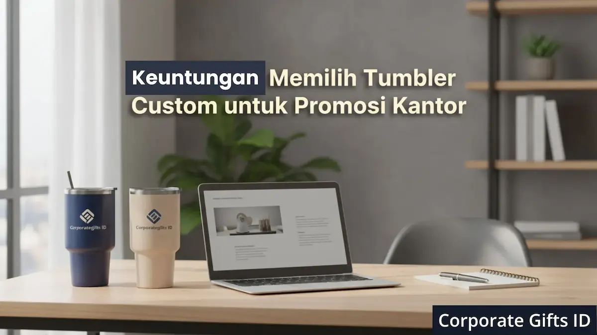

Corporate Gifts ID - Tumbler custom adalah pilihan promosi kantor paling efektif karena menghadirkan visibilitas merek yang konsisten setiap hari, mendukung nilai eco-friendly, dan memberikan nilai fungsional tinggi bagi penerimanya. Sebagai merchandise perusahaan, tumbler custom membantu membangun brand awareness jangka panjang dengan biaya promosi yang jauh lebih efisien dibandingkan souvenir kantor sekali pakai.
Dalam dunia promosi bisnis yang semakin kompetitif, mencari media branding yang fungsional, tahan lama, dan relevan dengan nilai-nilai perusahaan adalah tantangan tersendiri. Di tengah tren eco-friendly dan gaya hidup sehat, tumbler custom muncul sebagai jawaban elegan untuk kebutuhan souvenir kantor modern.
Tumbler custom bukan lagi sekadar botol minum biasa, melainkan telah berevolusi menjadi merchandise perusahaan esensial. Dengan mencetak logo, tagline, atau pesan inspiratif pada permukaan tumbler, perusahaan menciptakan iklan berjalan yang dibawa karyawan dan klien ke mana pun mereka pergi.
Poin Kunci Keuntungan Tumbler Custom Kantor:
- Visibilitas Harian: Digunakan 8-10 kali per hari di meja kerja, ruang meeting, hingga perjalanan komuter.
- Komitmen Eco-Friendly: Mengurangi ribuan gelas plastik sekali pakai, memperkuat reputasi CSR perusahaan.
- Retensi Penggunaan Panjang: Umur pakai rata-rata 2-3 tahun menghasilkan Return on Investment (ROI) promosi optimal.
- Sentuhan Personal VVIP: Mendukung grafir nama individual penerima via teknologi laser presisi tinggi.
Daftar Isi Artikel
- 1. Peningkatan Visibilitas dan Brand Awareness Jangka Panjang
- 2. Mendukung Budaya Eco-Friendly dan Corporate Social Responsibility (CSR)
- 3. Nilai Fungsional dan Sentuhan Personal yang Meningkatkan Apresiasi
- 4. Perbandingan Biaya dan Dampak (ROI Promosi)
- 5. Tabel Komparasi: Tumbler Custom vs Souvenir Sekali Pakai
- 6. Kesimpulan
- 7. Pertanyaan Seputar Tumbler Custom (FAQ)
1. Peningkatan Visibilitas dan Brand Awareness Jangka Panjang
Tumbler adalah benda yang hampir digunakan setiap hari di meja kerja, saat rapat koordinasi, di pusat kebugaran (gym), hingga saat bepergian ke luar kota. Frekuensi interaksi yang sangat tinggi ini secara langsung melipatgandakan visibilitas brand perusahaan di berbagai lingkungan sosial.
Paparan Merek yang Konsisten Sepanjang Tahun
Berbeda dengan brosur yang mudah terbuang atau selebaran kertas yang cepat terlupakan dalam hitungan menit, tumbler custom menawarkan paparan merek yang berkelanjutan. Saat tumbler diletakkan di meja klien ketika meeting berlangsung atau dibawa berjalan-jalan di tempat umum, brand Anda secara pasif melakukan promosi bisnis di lingkungan baru. Penerima akan melihat logo tersebut minimal beberapa kali sehari, sehingga brand recall tetap kuat sepanjang tahun.
Tumbler sebagai Iklan Berjalan yang Efektif
Setiap karyawan atau mitra bisnis yang membawa tumbler custom dengan desain elegan secara kolektif bertindak sebagai duta brand perusahaan (brand ambassador). Sebagai souvenir kantor yang portabel, tumbler berfungsi layaknya papan reklame mini yang bergerak bebas ke kafe, ruang konferensi, hingga transportasi publik, jauh lebih hemat biaya dibandingkan iklan digital berbayar yang masa tayangnya terbatas.

Varian tumbler custom ramah lingkungan dengan teknik sablon presisi dan grafir nama untuk gift set promosi kantor.
2. Mendukung Budaya Eco-Friendly dan Corporate Social Responsibility (CSR)
Konsumen, talenta muda generasi Z, dan mitra korporat saat ini sangat menaruh perhatian pada perusahaan yang menunjukkan tanggung jawab sosial dan kepedulian lingkungan nyata. Memilih tumbler custom secara aktif mendukung kampanye go green perusahaan.
Simbol Komitmen Ramah Lingkungan
Memberikan tumbler custom berkualitas sebagai merchandise perusahaan menunjukkan komitmen nyata dalam memangkas timbulan sampah plastik sekali pakai (single-use plastic). Nilai ramah lingkungan ini langsung mengangkat reputasi brand di mata publik dan pemangku kepentingan. Souvenir jenis ini juga menjadi pilihan favorit untuk kado souvenir tahun baru 2026 yang berorientasi keberlanjutan (sustainability).
Kualitas yang Mencerminkan Kredibilitas Perusahaan
Sangat disarankan memilih tumbler berbahan baku food-grade teruji, seperti stainless steel SUS 304 atau SUS 316 dengan dinding ganda (double wall vacuum insulated), serta material botol bebas racun BPA (BPA-free). Kualitas fisik produk yang Anda bagikan secara tidak langsung mencerminkan standar etika dan profesionalisme bisnis Anda. Tumbler yang awet bertahun-tahun memastikan investasi branding Anda terjamin aman.
3. Nilai Fungsional dan Sentuhan Personal yang Meningkatkan Apresiasi
Faktor kegunaan nyata adalah alasan utama mengapa tumbler selalu menempati peringkat teratas dalam survei preferensi souvenir kantor di Indonesia.
Produk Fungsional yang Selalu Dibutuhkan
Baik untuk menjaga kesegaran air dingin selama 24 jam saat cuaca terik, maupun mempertahankan kehangatan kopi espresso selama lembur mengejar deadline proyek, tumbler adalah perlengkapan harian esensial. Apresiasi penerima akan berlipat ganda karena mereka menerima hadiah yang benar-benar mempermudah gaya hidup mereka sehari-hari.
Peluang Personalisasi yang Fleksibel
Permukaan tumbler menyediakan ruang visual yang luas dan fleksibel untuk berbagai teknik kustomisasi modern:
- Laser Engraving Nama Individual: Memberikan sentuhan personal eksklusif berkesan mewah tanpa risiko terkelupas, sangat pas untuk klien VVIP dan eksekutif.
- Cetak UV Full Color High Definition: Memungkinkan penerapan gradasi logo perusahaan, ilustrasi visual artistik, dan motif warna identitas korporat yang tajam.
- Custom Powder Coating: Pilihan warna matte bertekstur elegan yang anti-slip dan nyaman digenggam saat beraktivitas kerja.
4. Perbandingan Biaya dan Dampak (ROI Promosi)
Ketika manajemen menghitung alokasi anggaran belanja promosi, tumbler custom menawarkan Return on Investment (ROI) yang jauh mengungguli format media konvensional.
Efisiensi Biaya Jangka Panjang
Biaya awal pengadaan tumbler custom mungkin berada di atas souvenir sekali pakai seperti bolpoin plastik atau map kertas. Namun, berkat siklus penggunaan tumbler yang mencapai ratusan bahkan ribuan kali selama 2 hingga 3 tahun, metrik Cost Per Impression (CPI) menjadi sangat kecil, sering kali di bawah Rp 20 per paparan mata. Ini adalah strategi alokasi bujet yang sangat cerdas bagi divisi marketing.
Ideal untuk Berbagai Acara Korporat
Fleksibilitas model tumbler membuatnya mudah diintegrasikan ke dalam ragam agenda bisnis:
- Bingkisan akhir tahun dan paket souvenir tahun baru 2026.
- Paket onboarding welcome kit bagi karyawan baru di hari pertama kerja.
- Merchandise eksklusif dalam event seminar, konferensi industri, dan pameran expo B2B.
- Tanda apresiasi loyalitas bagi pelanggan prioritas dan mitra vendor strategis.
5. Tabel Komparasi: Tumbler Custom vs Souvenir Sekali Pakai
Berikut adalah perbandingan komparatif menyeluruh antara tumbler custom premium dengan souvenir promosi kantor konvensional sekali pakai:
| Parameter Evaluasi | Tumbler Custom (Stainless / BPA-Free) | Souvenir Sekali Pakai (Kertas / Plastik Murah) |
|---|---|---|
| Masa Pakai Efektif | 1 hingga 3+ tahun pemakaian rutin harian | 1 minggu hingga 1 bulan pemakaian |
| Frekuensi Paparan Merek | Tinggi (8-10 kali per hari di berbagai lokasi) | Sangat rendah (hanya saat dibagikan) |
| Dampak Lingkungan (CSR) | Positif, mengurangi timbulan sampah plastik | Negatif, berisiko langsung menjadi limbah |
| Nilai Persepsi Penerima | Mewah, profesional, dan berharga tinggi | Biasa, generik, dan mudah dilupakan |
| Cost Per Impression (CPI) | Sangat rendah dan efisien dalam jangka panjang | Tinggi karena frekuensi paparan minim |
6. Kesimpulan
Menentukan tumbler custom sebagai pilar promosi bisnis dan souvenir kantor adalah keputusan strategis yang terbukti menghasilkan dampak ganda. Perusahaan Anda tidak hanya menghadirkan hadiah fungsional yang bernilai guna tinggi bagi penerimanya, tetapi juga mengirimkan pesan korporat yang kuat perihal tanggung jawab sosial dan komitmen mutu tanpa kompromi.
Melalui visibilitas merek yang konsisten sepanjang waktu, dukungan terhadap gaya hidup sehat ramah lingkungan, serta sentuhan kustomisasi grafir nama yang prestisius, tumbler custom memastikan merek bisnis Anda senantiasa berada di benak klien dan mitra kerja utama.
Pertanyaan Seputar Tumbler Custom Promosi (FAQ)

Ditulis oleh: Arinda Zakia
Senior Corporate Gifting SpecialistArinda Zakia adalah kurator profesional dan konsultan souvenir perusahaan di CorporateGifts.ID, berpengalaman dalam menangani rancangan merchandise promosi, gift set eksekutif, dan paket souvenir B2B terpersonalisasi untuk korporasi di seluruh Indonesia.
Lihat Profil Lengkap & Panduan Lainnya